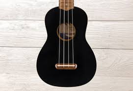
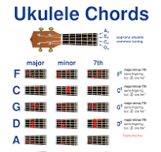
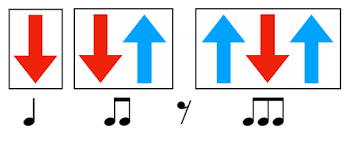

Iniciar a aprender ukelele ha sido una experiencia emocionante y divertida. Aunque al principio me costó acostumbrarme a los acordes y el rasgueo, rápidamente me di cuenta de lo accesible que es este instrumento.
El ukelele es un instrumento musical de cuerda originario de Hawái. Similar a una guitarra pequeña, tiene cuatro cuerdas y se caracteriza por su sonido brillante y alegre. Aunque se asocia con la música hawaiana, el ukelele es versátil y se utiliza en diversos géneros musicales. Su tamaño compacto y facilidad de aprendizaje lo hacen popular entre principiantes.
El ukelele tiene acordes básicos fáciles de aprender. Algunos de los acordes más comunes incluyen C (Do), G (Sol), F (Fa) y Am (La menor). A diferencia de otros instrumentos de cuerda, el ukelele tiene un diapasón más pequeño, lo que facilita la ejecución de los acordes con los dedos. Con solo unos pocos acordes, es posible tocar muchas canciones populares.
El rasgueo es una clave técnica para tocar el ukelele. Se puede hacer con el dedo pulgar o una pua, y existen diversos estilos de rasgueo, como el rasgueo hacia abajo o hacia arriba. Algunos patrones básicos incluyen el "down-up" (abajo-arriba), mientras que otros, como el "isla" o el "rasgueo hawaiano", ofrecen un sonido más rítmico y característico. Practicar rasgueos variados ayuda a dar más ritmo y dinamis
